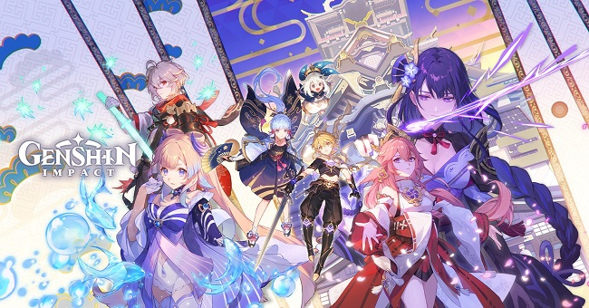

GENSHIN IMPACT
Genshin Impact là gì? Với sự ra mắt hoành tráng với các nhân vật và đồ họa tuyệt đẹp, tựa game nhanh chóng thu hút nhiều người chơi trong năm 2022. Đặc biệt tựa game khá phù hợp với những bạn yêu thích Anime. Ngoài ra, cốt truyện game cũng khá hấp dẫn, rất thích hợp cho các bạn game thủ thích khám phá thế giới mở. Các bạn hãy cùng theo dõi bài viết để tìm hiểu thêm về tựa game này nhé!
Xem Thêm
14/06/2022